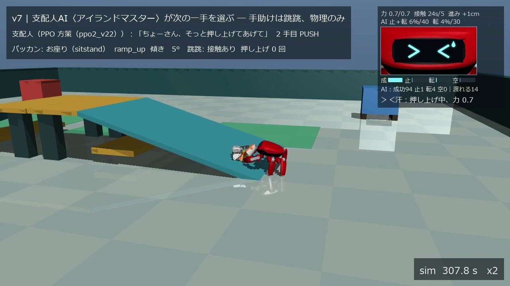
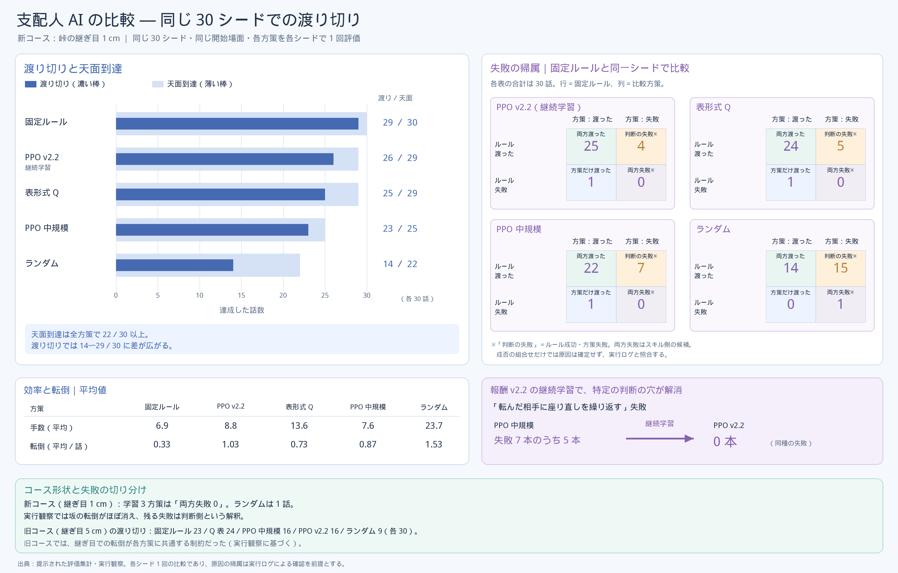

0:10 自己紹介。支配人 AI が名乗り、何を見せるかを話す（日本語と英語）
0:10 自己紹介。支配人 AI が名乗り、何を見せるかを話す（日本語と英語） 0:48 施工（×4）。ブルドーザーが坂を運んで峠を組む
0:48 施工（×4）。ブルドーザーが坂を運んで峠を組む 1:34 跳跳が坂を登り、天面でジャンプして越える
1:34 跳跳が坂を登り、天面でジャンプして越える 1:50 支配人 AI（PPO）の指示。画面下の帯に顔とセリフが打ち込まれる
1:50 支配人 AI（PPO）の指示。画面下の帯に顔とセリフが打ち込まれる
2:04 跳跳が座ったパッカンを押し上げる。右上の顔は「＞＜汗」 2:46 3 体とも渡り切り、輪になって万歳（×1）
2:46 3 体とも渡り切り、輪になって万歳（×1）〜 みんなで峠をこえよう 〜
| 動画（YouTube、全体公開、2:57） | {{YOUTUBE}} |
| コード一式（GitHub、public） | https://github.com/ortiz-ai-partners/mujoco-3body |
| ブルドーザーと施工（自作、別リポジトリ） | https://github.com/ortiz-ai-partners/physical-ai-course-builder |
倍速の明記：本編の再生速度は画面右下に sim 時計とともに常時表示している（×4：施工・仲間を呼ぶ場面・ゴール前に集まる場面、×2：坂の挑戦と救助、×1：最後の万歳）。最大 4 倍。カット（省略）はなく、物語の終わりまでのシミュレーションの全区間が映る。区間の時刻は §8。
ツール：MuJoCo 3.11.0。3 体を 1 つのワールドで同時に物理シミュレーションする。外力・瞬間移動は使わない。
AI の活用：本番で推論するのは、公式の学習済みポリシー（ONNX）5 本と、自作の AI 2 つ（支配人 AI、気分ネット）。自作の 2 つは CPU で学習した。
MuJoCo three-robot integration — "Let's cross the pass together": three robots cross a pass together in one MuJoCo world. A self-built bulldozer carries two 16° ramps and builds the course; the Microduck cannot climb with its official policy and sits down; the Jumper crab pushes it up from behind. A self-trained manager AI picks the next skill whenever an action fails, and a small mood net predicts how the running skill will end and drives the crab's face. Physics only: no external forces or teleports; official policies are used for inference only, unmodified. The bulldozer comes from a practical aim: a robot that helps set up the circuits (ramps, mats, vaulting boxes) of children's gymnastics classes.
本番では自作の AI が 2 つ推論している。支配人 AI は、うまくいかなかったときに 6 つの手から次の一手を選ぶ。気分ネット は、走っている手がどう終わりそうかを推論し、跳跳の表情を決める。 同じ 30 シードでの評価では、3 体の渡り切りは固定ルールの支配人で 29、PPO で 26、表形式 Q で 25、ランダムで 14 だった（各 30 話中）。提出動画では、判断する役が学習した AI であることを見せるために PPO の支配人を使い、3 体とも渡り切った。転倒はなく、コースの部材も動かなかった。
0:10 自己紹介。支配人 AI が名乗り、何を見せるかを話す（日本語と英語）0:48 施工（×4）。ブルドーザーが坂を運んで峠を組む1:34 跳跳が坂を登り、天面でジャンプして越える1:50 支配人 AI（PPO）の指示。画面下の帯に顔とセリフが打ち込まれる
2:04 跳跳が座ったパッカンを押し上げる。右上の顔は「＞＜汗」2:46 3 体とも渡り切り、輪になって万歳（×1）時刻は提出動画の時刻。画像はすべて提出動画のフレーム。
| 加点要素 | この資料で主に対応する所 |
|---|---|
| 創造性 | §2 課題設定（失敗を前提にした筋書き、助ける役と判断する役の分離）、§5 工夫点 |
| 技術力 | §4 システム構成（3 体の統合、支配人 AI、気分ネット）、§6 結果（同一シード評価、物理同一の検証） |
| 実用性 | §2 きっかけ（体操教室のサーキット設営）、§7 考察（設営の自動化と、動作は既製・判断は AI・根拠は画面に出す構成の応用先と限界） |
| 表現力 | §8 動画の構成（自己紹介、指示の帯、表情、倍速表示、自作 BGM、声の左右定位）と動画そのもの |
きっかけ：子ども向けの体操教室では、レッスンごとに坂・マット・跳び箱などを並べて、サーキット（運動のコース）を組み替える。この設営を手伝うロボットを将来の応用先に考え、まず坂を運んで据え付けるブルドーザー（course-builder）を作った。組んだコースを性質の違うロボットたちが実際に渡れるかを確かめる場として、本作の 3 体の物語を組み立てた。
題材：性質の違う 3 体（施工機械、二足の小型ロボット、六脚のカニ型ロボット）を 1 つの MuJoCo ワールドに集め、「道を作って全員で渡る」を協力でやり遂げる。
問い：既製の動作（公式ポリシー）が失敗したとき、次の一手を誰がどう決めるか。本作は、動作をスキル（固定プログラムが公式ポリシーに指令を出す）に任せ、どのスキルを使うかを支配人 AI が決める構成にした。
自分に課した原則
MuJoCo を選んだ理由：パッカンと跳跳の公式ポリシーはどちらも MuJoCo のモデル（MJCF）と組で配布されていて、自作のブルドーザーも MuJoCo で作っていた。同じ物理の上でなら、公式ポリシーを推論のまま、改変せずに動かせる。
創造性の主張：公式ポリシーが 16° を登れないという事実を隠さず、物語の中心に置いた。そのうえで「助ける役（跳跳）」と「判断する役（支配人 AI）」を分け、失敗からの立て直しそのものを見どころにした。
| 要素 | 区分 | 内容と出典 |
|---|---|---|
| 物理エンジン | 既製 | MuJoCo 3.11.0（Apache-2.0） |
| パッカン（Microduck） | 既製 | Pollen Robotics の MJCF（microduck_rl、Apache-2.0、3D モデルは CC BY-NC-SA 4.0）と公式 ONNX velstand・alpha_sitstand。推論のみ。 |
| 跳跳（Jumper） | 既製 | KingKong Robotics の MJCF と公式バンドル（Apache-2.0）の ONNX locomotion・jump・dance_crab。推論のみ。 |
| ブルドーザーと施工 | 自作 | physical-ai-course-builder：機体モデル、坂の部材と施工手順、運搬・走行のルール制御（AI 推論なし）。同じ課題のために作成（MIT）。別の走行試験のために経路生成器 rsplan（Built Robotics、MIT）を版固定・無改変で同梱しているが、本作の施工では使っていない。 |
| 3 体の統合と筋書き | 自作 | MjSpec.attach による結合、観測の転記、通し台本、スキル 6 つ、跳跳の前方ジャンプ（公式 jump の関節目標に股関節の掃きを重ねる。外力なし）。 |
| 支配人 AI・気分ネット | 自作 | 学習環境、報酬、PPO と表形式 Q の学習、同一シード評価、気分ネットのデータ収集と学習、表情 11 種と規則 17 本、顔モニター。 |
| 動画の演出と音 | 自作 | 自己紹介、指示の帯、字幕、鳴き声と効果音の合成、声の左右定位、BGM（numpy／scipy の加算合成。既存の曲・音源・サンプルは不使用）。 |
| 講座の OP／ED カード | 講座の素材 | 提出動画の最初と最後の計 6 秒。リポジトリには含めない。 |

3 系統の MJCF を MjSpec.attach で 1 つのモデルに結合した（名前空間 md-／jp-）。時間刻みは施工中 0.005 s、施工後 0.001 s。パッカンのサーボは公式の値（kp 0.55、±0.96 Nm）のままにした。
| 機体 | 動かしているもの | 区分 |
|---|---|---|
| ブルドーザー | course-builder のルール制御（運搬・施工・走行） | 自作、AI 推論なし |
| パッカン | velstand（観測 61 次元、50 Hz）、alpha_sitstand | 既製、推論のみ |
| 跳跳 | locomotion（観測 415、200 Hz）、jump（167、200 Hz）、dance_crab（209、50 Hz） | 既製、推論のみ |
観測は 46 次元（パッカンの姿勢・向き・位置、坂のどこにいるか、跳跳との距離と接触、直前の手とその結果など）。手は 6 つ：待つ（WAIT）、座らせる（SEAT）、押し上げる（PUSH）、離れる（BACK_OFF）、立たせる（STANDUP）、進ませる（WALK_ON）。
各手は固定プログラムのスキルとして走り、終わると 13 種の結果の 1 つを返す。報酬は渡り切り +10、経過 −0.03/s、天面到達 +3、転倒 −1、無駄な手 −1、時間切れ −5、コース破損 −10 など。開始場面は 7 種（足元で座る・立つ・転倒、天面で転倒など）から抽選した。
| 方式 | モデル | 学習 | CPU 時間 |
|---|---|---|---|
| 固定ルール | 条件分岐（実験で分かった知識を書いたもの） | なし | ― |
| PPO（提出動画で使用） | Stable-Baselines3 の MLP（64×64）、12 並列 | 12,000 決定＋報酬を直して 12,000 決定 | 8 h 41 min |
| 表形式 Q | 状態キー 7 要素（314 状態） | 120 話 | 1 h 59 min |
鍵になった発見：座ったパッカンが跳跳の方（坂と反対側）を向いていると、押されている間の傾きは 6〜12° にとどまり、坂の縁でも倒れない。坂の上を向いて座ると約 40° 後ろに傾き、縁で転ぶ。
この向きの条件を SEAT スキルと固定ルールに組み込んだことで、押し上げが成立した。

入力 53（支配人 AI の観測 46＋いま走っている手 6＋経過時間 1）→ 32 → 32 → 5 の小さな MLP。出力は、走っている手の結末（成功・止まる・転ばせる・空振り）の確率 4 つと、「渡れる」確率 1 つ。 学習データは学習環境で固定ルール・PPO・ランダムの支配人を走らせた 35 話・47,952 サンプル。話単位で 1/4 を検証用に分け、検証用 10,772 サンプルで 4 分類の正解率 0.80、成功か失敗かの均衡正解率 0.83。学習は CPU で 3.5 秒。 本番では制御周期 0.02 秒ごとに推論し、提出動画の本編では 5,050 回推論した。
最初は PPO の価値関数 V(s) を気分として使う案を試したが、押し上げで密着している間の平均が −21〜−22 と低く、天面に着く直前まで「絶望」と読んでしまうため採用しなかった。
表情は 11 種で、優先順の規則 17 本で決める。規則は気分ネットの確率と、計測値（傾き、パッカンへの接触力、押している時間、進み、転倒）を組み合わせる。画面右上の顔モニターに、表情を決めた値をそのまま表示する。
SEAT スキルの仕様にした。jump の関節目標への重ね合わせだけで実現した（外力なし）。
評価は峠の継ぎ目 1 cm の新しいコースで、30 シードを全方式で共有し、方策は決定的に動かした。
| 方式 | 渡り切り | 天面到達 | 無駄な手／話 | 転倒／話 | 学習（CPU） |
|---|---|---|---|---|---|
| 固定ルール | 29/30 | 100% | 0.07 | 0.33 | なし |
| PPO（報酬を直した継続学習） | 26/30 | 97% | 0.60 | 1.03 | 8 h 41 min |
| 表形式 Q | 25/30 | 97% | 5.17 | 0.73 | 1 h 59 min |
| PPO（継続学習の前） | 23/30 | 83% | 0.47 | 0.87 | 4 h 13 min |
| ランダム | 14/30 | 73% | 8.20 | 1.53 | なし |
コースの破損は全方式で 0 回。固定ルールとの同一シード比較では、PPO の失敗 4 本・表形式 Q の失敗 5 本はどれも「固定ルールなら渡れた」回で、判断の失敗だった。両方とも失敗した回（スキルの失敗）はランダムとの比較の 1 本だけだった。
提出動画の本編：学習した PPO の支配人が 4 手を選び、すべて成功した（sim 264.6 s 座らせる、276.5 s 押し上げる、347.9 s 立たせる、353.4 s 進ませる）。固定ルールは押し上げの後に「離れる」を挟むが、PPO は押し上げが天面で終わった直後に「立たせる」を選び、1 手少なく渡り切った。押し上げには sim で 71 秒かかった。3 体とも渡り切り、転倒 0、コースの部材の移動なし。表情は 25 回切り替わった。同じ最終設定で固定ルールの支配人を使った本編（5 手）も、比較用にリポジトリに置いた。
直接の応用先は、体操教室のサーキット設営である。坂やマットを運んで決まった位置と向きに据え付ける作業は、コースの設計データ（部材の種類・位置・向き）から施工手順を作れば、本作のブルドーザーと同じ形で自動化できる。峠の継ぎ目を 5 cm から 1 cm に詰めて小型ロボットがつまずかなくなったように、渡る側がつまずかない精度で据え付けることが要点になる。据え付けたコースを渡る側が通れるかをシミュレーションで先に確かめる流れは、設営後の点検にも使える。
「動作は既製のポリシー、どれを使うかは判断の AI、その根拠は画面に出す」という構成は、複数のロボットが働く現場（搬送や施工）で、人が監督しながら AI に判断を任せる形に向く。スキルを差し替えても判断の層はそのまま使え、学習も CPU 数時間で済む。 表情や指示の帯のように判断の根拠を見せることは、人が AI の判断を確かめて介入する場面で役に立つ。
velstand は 16° を登れず、歩行指令 0.3 m/s に対して実速は約 0.10 m/s。これは公式ポリシーの設計範囲の外で、本作はそれを前提に物語を組んだ。| 提出動画の時刻 | 速度 | 内容 |
|---|---|---|
| 0:00〜0:03 | ― | 講座の OP カード |
| 0:03〜0:18 | ― | 支配人 AI の自己紹介（名乗り、講座の最終課題として何を見せるか、3 体の紹介、自分の仕事）。BGM はここから始まり、最後まで一定の音量 |
| 0:18〜1:02 | ×4 | 施工：ブルドーザーが坂 2 枚を運んで峠を組む（空荷の往復も省略しない）。その間パッカンと跳跳は空き地で遊ぶ |
| 1:02〜1:38 | ×2 | ブルドーザーが渡る（1:12 施工完了）、パッカンが 2 回挑んで座り込む（1:26）、跳跳が越える（1:37） |
| 1:38〜1:42 | ×4 | パッカンが仲間を呼び、跳跳がコースの東側を回って戻る |
| 1:42〜2:33 | ×2 | 救助：学習した支配人 AI（PPO）の 4 手（1:42 座らせる、1:48 押し上げる、2:24 立たせる、2:27 進ませる）。2:33 に 3 体とも渡り切る |
| 2:33〜2:37 | ×4 | 3 体がゴール前に集まる |
| 2:37〜2:54 | ×1 | 輪になって万歳（フォークの上下、屈伸と首振り、ハサミを上げるダンス） |
| 2:54〜2:57 | ― | 講座の ED カード |
画面の要素：左上の字幕（場面と各機体の状態）、右上の顔モニター（跳跳の表情、気分ネットの値、決め手の値）、右下の sim 時計と倍速、判断のときだけ画面下の指示の帯。 音：ロボットの鳴き声と効果音はすべて合成で、パッカンは小さめ、跳跳はその次。鳴いた機体の画面上の位置で左右に振る。
再現：Python 3.10 で pip install -r requirements.txt（mujoco 3.11.0、onnxruntime、stable-baselines3、torch など）。ブルドーザーと Jumper のリポジトリを隣に並べ、次の 4 段で提出動画を作り直せる（講座のカードは別途用意）。
python v7_full.py --manager ppo --run ppo2_v22 --tag _take58 --build-speed 4 --no-cuts \
--speedup CALL=4 --speedup RETURN=4 --speedup CELEBRATE=4 --tail-write 1.0 # 本編（約 5〜8 分）
python intro.py # 自己紹介
python music/marimba_bgm.py # BGM
python assemble.py --op <OP> --intro out/intro.mp4 --main out/3body_arena_v7_take58.mp4 --ed <ED> \
--out out/submission.mp4 --bgm out/music/bgm_marimba.wav --bgm-gain -16 --bgm-until end --bgm-fade 0
本編の記録 out/v7_full_report_take58.json に、最終状態の sha256、出来事、支配人の判断、表情の記録が入っている。学習・評価・気分ネットの手順、試した全テイク（失敗したものを含む）の台帳、表情の規則としきい値の一覧は GitHub の README と docs/ にある。